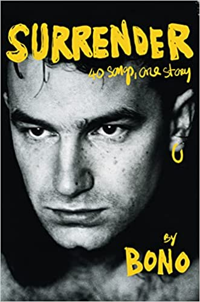

"Surrender: 40 Songs, One Story"
- Read on 2023-05-01
- Rating: ️️️️️
- Format: 🎧 (20 hours 25 minutes)
I read (listened to) this book as part of a book club. I doubt I would have chosen it for myself. While I have plenty of memories associated with U2's music, and I own multiple albums from them, U2 wouldn't make it onto the list of top ten influential artists in my life.
I wish the "40 Songs, One Story" part of the title didn't exist, since that feels like misleading. This book is memoir, or an autobiography. It's not about the songs. The songs come into play, and he has some stories about some of them, but they're not the focus of the book. The book itself felt a little slow to start. I thought to myself at one point, "He may be a song writer, but he's not an author."
All of this said, Bono's story (and writing) came around to me. I found myself enjoying what he shared, even if I didn't agree with it all, or how it was presented. And I can applaud some of his efforts (and results). At the end of the day, however, I'm not sure I could recommend the book to anybody but a U2 or Bono fan.
One small note about the audiobook: I'm not sure you could have had a better person read his own book. Between the song samples, occasional singing, his own inflection (and accent) on things, it was a win. He's still a performer, and as simple as an audiobook performance can seem, he did a great job here.
- Prior: Before They Are Hanged
- Next: The Little Book of Hygge